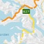

Prosjektregistrering

I denne seksjonen skal det fylles ut informasjon om prosjektets navn, estimert ferdigtidspunkt og referanser.
Felter merket med * er obligatoriske
Registrer prosjektets plassering som linje eller areal.
I desktop kan man bruke piltastene til å navigere mens man digitaliserer et objekt. Men dette virker ikke om man bruker mobil.


Registreringen av prosjekt med navn Prosjektnavn er fullført
For å se en kartoversikt over registrerte prosjekter i region Nord kan du gå inn på dette kartet
Om du vil registrere et nytt prosjekt kan du gjøre dette ved å trykke på knappen under